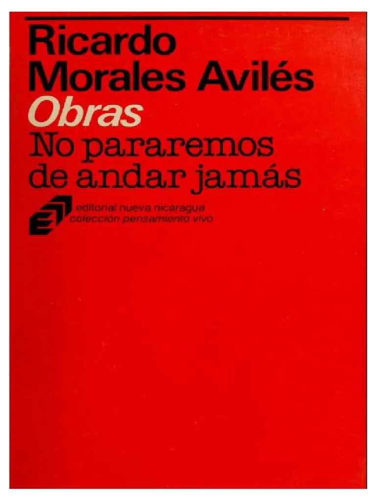
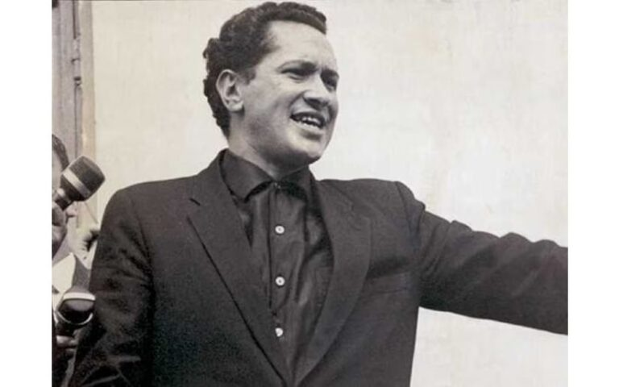
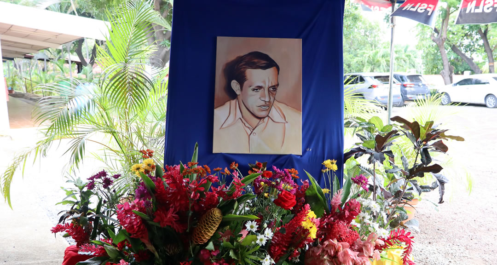

1) Escribió y difundió pensamiento histórico-cultural
Uno de sus aportes más visibles fue la producción de textos y reflexiones que ayudaron a interpretar procesos nacionales con mayor profundidad. Su escritura abordaba la historia desde una mirada amplia: actores sociales, cultura política, conflictos de época y construcción de identidad. Esa combinación de rigor y claridad permitió que su trabajo fuera útil tanto para especialistas como para público general.
Además de escribir, promovió activamente la difusión del conocimiento. Se involucró en conferencias, debates y actividades de divulgación para acercar temas complejos a audiencias no especializadas. Esta labor fue clave para democratizar el acceso a contenidos históricos y fortalecer una ciudadanía mejor informada.
2) Impulsó formación crítica y educación cívica
Morales Avilés entendió la educación como un espacio de transformación social. Su énfasis en la lectura crítica, la argumentación y el análisis contextual influyó en la manera en que muchos estudiantes abordaron la realidad nacional. En lugar de repetir esquemas, promovía formular preguntas, comparar fuentes y debatir con fundamento.
Esta dimensión pedagógica dejó huellas importantes en ámbitos académicos y comunitarios. Su voz insistía en que la historia no debía memorizarse pasivamente, sino estudiarse como herramienta para comprender problemas presentes y proyectar alternativas de futuro.
3) Fortaleció la memoria y el diálogo social
Otra de sus acciones relevantes fue contribuir al rescate de memoria histórica como base para el diálogo social. Señaló la importancia de reconocer experiencias colectivas, tensiones políticas y procesos culturales para construir consensos más sólidos. Su enfoque subrayaba que una sociedad sin memoria corre el riesgo de repetir errores y debilitar su tejido democrático.
En síntesis, “las cosas que hizo” no se reducen a una lista de obras; se traducen en una práctica sostenida de pensamiento, formación y servicio cultural con efectos duraderos.
Imágenes de su labor


